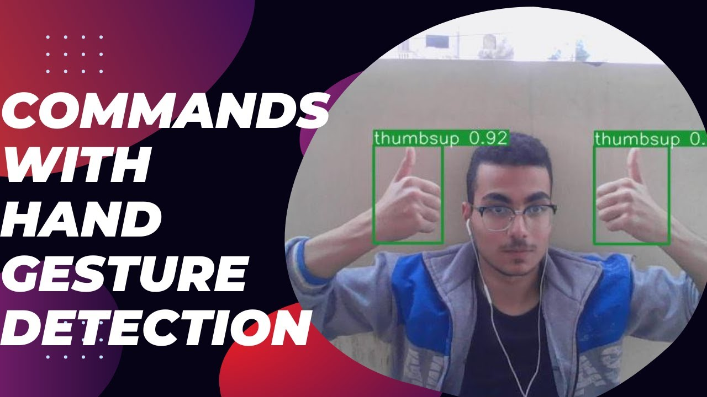

October 20, 2023
This project developed a system that enables users to control their PCs through hand gestures by recognizing 10 specific gestures, primarily from sign language. Using the YOLO v5 model, the system executes commands such as adjusting volume and brightness, activating a voice assistant, and shutting down or restarting the PC. Implemented in Python with libraries like OpenCV and TensorFlow, the model demonstrates high accuracy and responsiveness. This work has been published on ResearchGate and is set for publication in an American journal, contributing to advancements in gesture recognition and human-computer interaction.


In this video, I demonstrate how to create a YOLO (You Only Look Once) model using a custom dataset. The tutorial includes essential steps such as data preparation, model configuration, training, and evaluation, equipping viewers with practical skills to implement YOLO for object detection tasks effectively.
In this project, I developed a customer churn model using machine learning techniques to predict the likelihood of customers leaving a telecommunications company. The process involved data collection, analysis, model development, and performance evaluation. By utilizing algorithms such as logistic regression, decision trees, and random forests, I provided actionable insights that enable the company to implement proactive measures for customer retention.